OPEN SOURCE · ATTRIBUZIONI
Licenze e componenti di Nalivy
Informazioni integrative su alcune dipendenze software utilizzate in Nalivy Simply Free 3.5.0 — Build 100 RC (22 novembre 2026).
Nota sulla versione distribuita: questa pagina è un'integrazione documentale successiva alla pubblicazione. Gli APK B100 già firmati e il loro archivio sorgente originale non vengono modificati; non si dichiara che i testi seguenti fossero inclusi negli APK originari. L'inventario non è ancora un elenco completo di tutte le dipendenze transitive.
NewPipe Extractor
© NewPipe e.V. e contributori. La libreria estrae metadati e informazioni da piattaforme video. La licenza consente GPL versione 3 o successive.
Mozilla Rhino
Motore JavaScript utilizzato dalle estensioni e da componenti di estrazione. Il file di licenza upstream contiene anche note sull'applicabilità delle licenze.
jsoup
© 2009–2026 Jonathan Hedley. Dipendenza transitiva dichiarata da NewPipe Extractor v0.26.5; il numero effettivamente selezionato dal grafo Gradle della release richiede una verifica separata.
AndroidX Media3
Componenti Media3/ExoPlayer per la riproduzione. © The Android Open Source Project e contributori.
Ktor
Client HTTP Kotlin e componenti correlati. © Ktor / JetBrains e contributori.
Il progetto deriva inoltre da MySpoti (GPL-3.0) e incorpora altri componenti e adattamenti documentati nei sorgenti. Per il codice corrispondente alla release B100 consultare l'archivio sorgente pubblicato.
Un generatore di inventario delle dipendenze sarà valutato per le prossime build. Licenze e file NOTICE dei componenti incorporati manualmente richiedono comunque revisione dedicata.